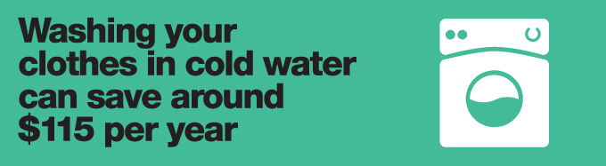
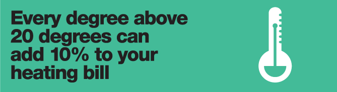
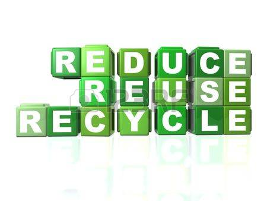

Whenever you save energy, you not only save money, you also reduce the demand for such fossil fuels
as coal, oil, and natural gas. Less buringing of fossil fuels also means lower emissions of carbon dioxide(CO2),
the primary contributor to global warming, and other pollutants.
You do not have to do without to achieve these savings.There is now an energy efficient alternative for almost every
kind of appliance or light fixture. That means that consumers have a real choice and the power to
change their energy use on a revolutionary scale.
By exercising even a few of the following steps, you can cut your annual emmissions by thousands of
pounds and your energy bills by a significant amount!
Home appliancess

Turn your refrigenerator down.Refrigerators account for about 20% of Household electricity use. Use a thermometer to set your
refrigerator temperature as close to 37 degrees and your freezer as close to 3 degrees as possibe.
Make sure that its energy saver switch is turned on.Also,check the gaskets around your refrigerator/
freezer doors to make sure they are clean and sealed tightly.
Set your clothes washer to the warm or cold water setting,
not hot.Switching from hot to warm for two loads per week can save nearly 500pounds of CO2 per year
if you have an electric water heater, or 150 pounds for a gas heater.
Make sure your dishwasher is full when you run it and
use the energy saving setting, if available, to allow the dishes to air dry.You can also turn off the drying
cycle manually.Not using heat in the drying cycle can save 20 percent of your dishwasher's total electricity use.
Turn down your water heater thermostat.Thermostats are often set to 140 degrees F when 120
is usually fine. Each 10 degree reduction save 600 pounds 0f CO2 per year for an electric water heater.
If every household turned its water heater thermostat down 20 degrees, we could prevent more than
45 million tons of annual CO2 emissions — the same amount emitted by the entire nationsof
Kuawait or Libya.
Home Heating and Cooling

Be careful not to overheat or overcool rooms.In the winter,set your thermostat at 68 degrees in daytime, and
55 degrees at night. In the summer, keep it at 78. Lowering your thermostat just two degrees during winter
saves 6 percent of heating-related CO2 emissions.That's a reduction of 420 pounds of CO2
per year for a typical home.
Clean or replace air filters as recommended. Energy is lost when air
conditioners and hot-air furnaces have to work harder to draw air through dirty filters.Cleaning a dirty air
conditioner filter can save 5 percent of the energy used. That could save 175 pounds of CO2
per year.
Buy energy-efficient compact fluorescent bulbs for your most-
used lights.Although they cost more initially, they save money in the long run by using only 1/4 the energy
of an ordinary incandescent bulb and lasting 8-12 times longer.They provide an equivalent amount of bright,
attractive light. Only 10% of the energy consumed by a normal light bulb generates light.The rest
just makes the bulb hot. If we household replaced one of its standard light bulbs with an energy
efficient compact fluoresent bulb, we would save the same amount of energy as a large nuclear power plant
produces in one year.In a typical home, one compact flurescent bulb can save 260 pounds of CO2
per year.
Wraps your water heater in an insulating jacket, which costs just
$10 to $20.It can save 1100lbs.of CO2 per year for an electric water heater, or 220 pounds for
a gas heater.
Use less hot water by installing low-flow shower heads..They
costs just $10 to $20 each, deliver an invigorating shower and save 300 pounds of CO2per year for
electrically heated water, or 80 pounds for gas-heated water.
Weatherize your home or apartment, using caulk and weather stripping
to plug air leaks around doors and windows.Caulking costs less than $1 per window, and weather stripping is under
$10 per door. These steps can save up to 1100 pounds of CO2 per year for a typical home.
Ask your utility company for a home energy audit to find out where your home is poorly insulated or energy isefficient.
This service may be provided free or at low cost.Make sure it includes a check of your furnace and air conditioning.
Whenever possible, walk, bike, carpool, or use mass transit.
Every gallon of gasoline you save avoids 22 pounds of CO2 emissions. If your car gets 25 miles per gallon, for example,
and you reduce your annual driving from 12,000 to 10,000 miles, you'll save 1800 pounds of CO2.
When you next buy a car, choose one that gets good mileage.If your new car gets 40 miles per gallon instead of
25, and you drive 10,000 miles per year, you ’ ll reduce your annual CO2 emissions by 3,300 pounds.
Reduce,reuse,recycle

Reduce the amount of waste you produce by buying minimally packaged goods, choosing reusable products
over disposable ones, and recycling. For every pound of waste you estimate or recycle, you save energy and reduce emissions of CO
2 by at least 1 pound.Cutting down your garbage by half of one large trash bag per week saves at least
1100 pounds of CO2 per year.Making products with recycled materials, instead of from scratch with raw
materials, uses 30 to 55% less for paper products, 33% less for glass and a whopping 90% less for aluminum.
If your car has an air conditioner, make sure its coolant is recovered and recycled whenever you have it serviced.
The
CFCs, which damage the ozone layer as well as add to global wariming.
The
CFCs from one auto air conditioner can add the equvalent of 4800
pounds of CO
2 emissions per year.
Home Improvements
Insulate your walls and ceilings.This can save 20 to 30 percent of home
heating bills and reduce CO2 emissions by 140 to 2100 pounds per year.If you live in a colder climate,
consider superinsulating.That can save 5.5 tons of CO2 per year for gas-heated homes, 8.8 tons per year
for oil heat or 23 tons per year for electric heat.
Modernize your windows.Replacing all your ordinary windows with
argon filled, double-glazed windows saves 2.4 tons of CO2 per year for homes with gas heat, 3.9 tons of
oil heat, and 9.8 tons for electric heat.
Plant shade treesand paint your house a light color if you live in a warm
climate, or a dark color if you live in a cold climate. Reductins in energy use resulting from shade trees
and appropriate painting can save up to 2.4 tons of CO2 emissions per year.
Business and community
Work with your employer to implement these and other energy-efficiency and waste-reduction measures in your
office or workplace.Form or join local citizens ’ groups and work with local government officials to see
that these measures are taken in schools and public buildings.
Keep track of the environmental voting records of candidates for office.Stay abreast of environmental
issues on both local and national levels, and write or call your elected officials to express your concerns
about energy efficiency and global wariming.